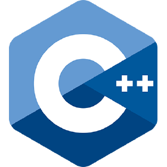
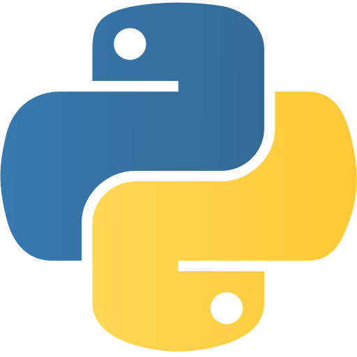
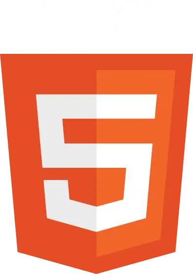
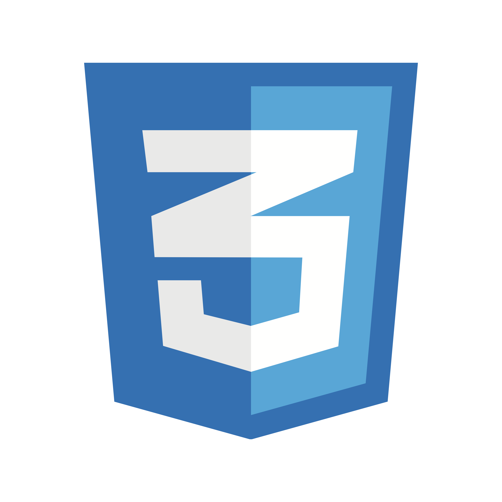

Įgūdžiai

C++

SQL

Python

Kotlin

Git

HTML

CSS
Studentas | Programuotojas
Esu Edgaras Germanas, Vilniaus universiteto studentas, besidomintis programavimu ir informacinėmis technologijomis. Turiu patirties dirbant su C++, SQL, Python ir Kotlin, taip pat esu kūręs įvairius universitetinius ir asmeninius projektus. Mėgstu mokytis naujų technologijų, spręsti problemas ir tobulinti savo programavimo įgūdžius.

C++
SQL

Python
Kotlin
Git

HTML

CSS
Technologijos: C++, CMake, Git
Sukurta duomenų apdorojimo programa, galinti nuskaityti ir generuoti didelius studentų duomenų rinkinius bei klasifikuoti įrašus pagal apskaičiuotus rezultatus. Sistema buvo testuojama su duomenų rinkiniais nuo kelių tūkstančių iki kelių milijonų įrašų, lyginant skirtingas duomenų struktūras ir apdorojimo strategijas, siekiant įvertinti našumą ir atminties naudojimą. Taikyti objektinio programavimo principai ir automatizuotas testavimas naudojant „Google Test“.
Technologijos: Kotlin, Android Studio, Git
Sukurta „GYMIFY“ – „Android“ fitneso programėlė, kurią kūrėme trijų žmonių komandoje. Programėlė leidžia vartotojams susikurti asmeninius treniruočių planus ir sekti savo fizinius duomenis, tokius kaip ūgis ir svoris. Buvau atsakingas už front-end kūrimą naudojant „Kotlin“ – projektavau ir įgyvendinau vartotojo sąsają. Glaudžiai bendradarbiavau su galinės dalies kūrėjais, dirbusiais su „JavaScript“, kad būtų užtikrintas sklandus ryšys tarp vartotojo sąsajos ir serverio dalies.
| Institucija | Studijų laikotarpis | Įgytas išsilavinimas | Studijų programa |
|---|---|---|---|
| Vilniaus universitetas | 2025 - 2029 | Bakalauro laipsnis | Informacinių sistemų inžinerija |
| Visagino "Verdenės" gimnazija | 2013 - 2025 | Vidurinis išsilavinimas |